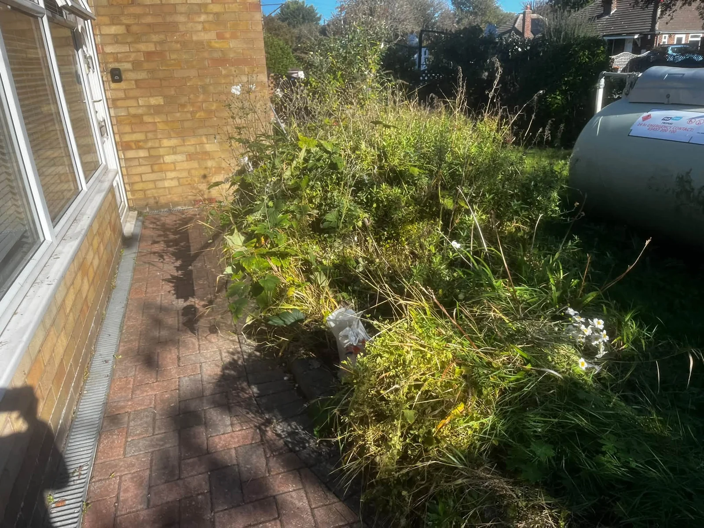

N&C LANDSCAPING LTD · SKEGNESS, LINCOLNSHIRE
Gardens kept tidy.
Year round.
Grass cutting, hedge trimming, jet washing and garden clear-ups across Skegness and the Lincolnshire coast. Two brothers, free quotes, no fuss.
Free quotesSkegness & coastTwo brothers
A SMALL TEAM, DOING IT PROPERLY
Noah and Carter.
Two brothers.
We’re two brothers who started a small landscaping business with a passion for making gardens look fresh, tidy and beautiful. We wanted to earn a living doing something we genuinely enjoy.
Most of all, we like seeing the look on someone’s face when their garden finally looks the way they wanted it to.
See the work →
CLEAR-UPS, DONE RIGHT
Overgrown
to sorted.
An overgrown corner or a garden left for a year is not a problem for us — it is the job. We clear it back to something you can use, then keep it that way.
Request a free quote →
OUR WORK
A garden you can be proud of.
A few of the gardens we look after around Skegness.
GOT A QUESTION
A few useful answers.
Where do you work?
We are based in Skegness and cover the Lincolnshire coast, including Ingoldmells, Chapel St Leonards, Wainfleet, Burgh le Marsh, Spilsby, Sutton on Sea, Mablethorpe, Alford and Horncastle. Send your postcode to check availability.
Do you do one-off jobs?
Yes. A single clear-up, a one-off cut or a jet wash is fine — and if you want us back regularly, we can arrange that too.
Are quotes free?
Yes. Get in touch for a free, no-obligation quote. Include photographs, your postcode and the work you would like done.
How do I get in touch?
Call or WhatsApp 07547 687523, or email landscapingnc215@gmail.com. You can also follow the page on Instagram at ltdnclandsaping.
FREE GARDEN QUOTE
Let’s talk about your garden.
Tell us what you have in mind. This form opens a WhatsApp draft with all your details, ready for you to review, add photos and send.